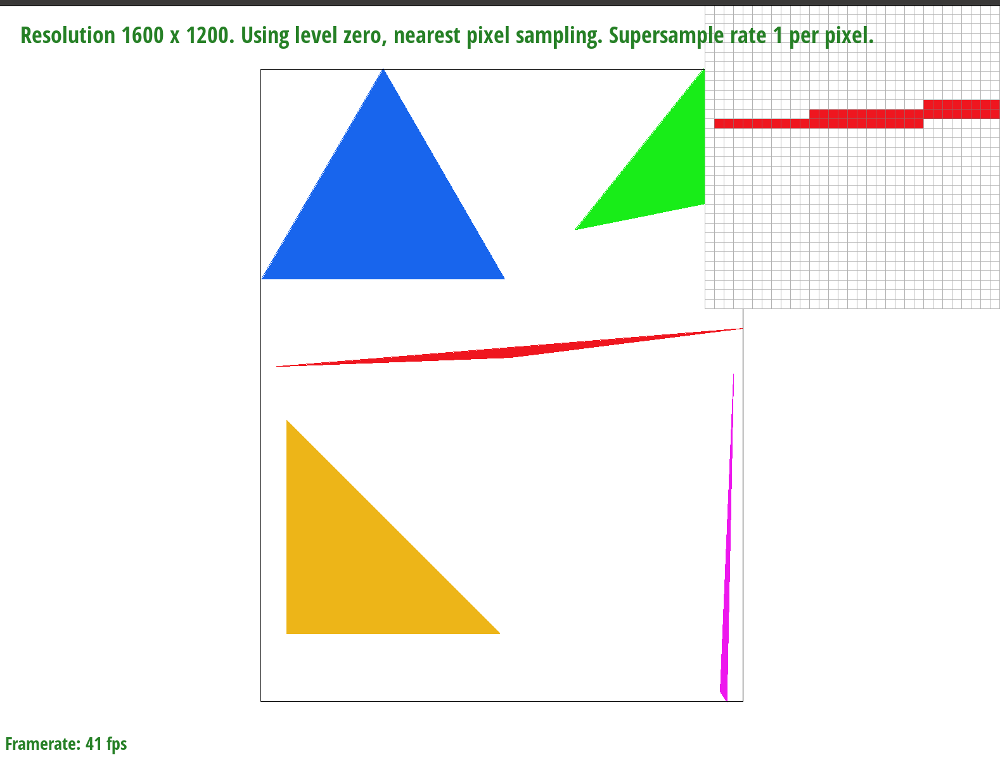

Overview
In this project I implimented Rasterization, Antialiasing, Transforms, Barycentric coordinates, and Texture mapping. I also implimented a few different types of texture mapping, including nearest pixel sampling, bilinear sampling, and level sampling.
To dive a little into some teqniques I implemented, level sampling bridges texture and image resolution differences via interpolation, offering methods like zero, nearest, and bilinear levels, pixel sampling methods, including nearest neighbor and bilinear, assign colors based on texture pixels' proximity, amoung these nearest neighbor yields blocky results, while bilinear offers smoother transitions. Bilinear sampling enhances image quality by averaging nearby texture pixel colors, but with a computational trade-off.
Perhaps the most interesting thing I learned from this homework is the trade offs of every visual enhancer I implemented. Though having a sample size of 16 resulted in higher quality images, the render time was noticible, unlike with the other methods, which even with enhancments seemed to be very quick. Another interesting thing was the entire concept of Barycentric coordinates, which allow for teqniques such as color gradients, and were in a way the foundation for the later steps in the project, such as texture mapping and level sampling.
Section I: Rasterization
Part 1: Rasterizing single-color triangles
To rasterize the triangles I first found the bounds of the triangle, so that I could create the smallest possible box that was guaranteed to contain the entire triangle. To do this I found the maximum X value, the maximum Y value, the minimum X value, and the minimum Y value. Using these two points I was able to create a box bounded by the coordinates (minX, minY), (maxX, maxY), (minX, maxY), and (maxX, minY). I then iterated over every point in the box, and using the Three Lines Point-in-Triangle test from lecture two determined whether or not it was inside the triangle, outside of the triangle, or on the line of a triangle. I then used the fill_pixel function to fill in the points that were inside the triangle or on the line.
Part 2: Antialiasing triangles
My program works simialarly to part1, I begin by looping over the box that contains the triangle, however, for this test I now check the points that are within 1 / sqrt(sample_rate) of the pixel. I then take that point and store it in an expanded sample_buffer, which is of size old_sample_buffer * sample_rate. This allows me to store the new sample points that I have taken from around each pixel. This method allows me to take a sample of points around each point, which gives a better idea of the average color around na area, which can allow for a smoother representation of a surface.
Overall I modified a few things, but kept most of it the same. I used the same bounds, and two for loops from part 1. I added two new loops to check the points in the radius of each point. I also changed the sample_buffer to be of size width * height * sample_rate. I also had to make a new function, new_rasterize_point. The reason for this was that I could not figure out how to offset the value from the sample to map it to a unique position in the sample array with only the parameters given in rasterize_point.
|

|
|
|
|
|
Part 3: Transforms
I made his arms more muscular, and made him do the firepower pose. To do this I rotated all his arm segments by 45 degrees, which gave them a sort of volume as a certex jutted out, then I translated his leftmost arm up 50 pixels and right ten pixels.
Section II: Sampling
Part 4: Barycentric coordinates
Barycentric coordinates are a type of coordinate system that calculates a point in relation to a weighted combination of the vertices. For example, a point that lies on the A vertex is 100% A, 0% B and 0% C, thus its coordinate is (1, 0, 0). As such, every point that is inside the circle has three positive coordinates, and every point that is outside has at least one negative coordinate.
As can be seen from the picture below, Barycentric coordinates can be used to map color gradients. Simply multiply the color at the vertex by its respective Barycentric coordinate. For example, if A is red, B is green, and Gamma is blue, then the color at the point is a 3D vector color = (A, B, C).

Part 5: "Pixel sampling" for texture mapping
Pixel sampling is a method of sampling by which we find the colors defined by a texture by sampling the texture layer. 1. Nearest neighbor sampling works by sampling a point's barycentric coordinates, and then finding the point closest to it in the underlying texture layer and assigning it that color 2. Bilinear sampling works by choosing the four nearest coordinates in the texture sample plane and weighing them by closeness, then taking the weighted color and assigning it to that sample.
These differ in many ways, because nearest pixel samping simply finds the closest texture pixel to a point, it can often appear blocky and uneven, as the pixels don't merge with each other at all. This problem is mitigated with bilinar sampling, which avergaes the four nearest texture pixels. This allows for a smoother transition between pixels, and a more accurate representation of the texture. This means that in images with stark contrasts, the bilinear sampling will be more accurate, and will smooth out all transitions, and nearest pixel sampling will appear blocky.
|
|
|
|
|

|
Part 6: "Level sampling" with mipmaps for texture mapping
Level samping is a method by which we can map a texture onto an image. In level samping we can map a texture space that may not have all the same points as the image space, by taking the samples we have and interpolating between them to fill in the gaps, thus creating a cohesive mapping between the texture and the image at different levels of detail or resolution.
I implemented three types of level texture sampling: zero level, nearest level, and bilinear. Zero level is the same as no level sampling. Nearest level finds the nearest minimap level to the texture and passes that as a parameter to the sampling function.
Bilinear level computes a continuous number that represents the minimap level, then computes a weighted sum of those minimaps and feeds that into the sampling function.
My implementation was similar to my code from part 2, however, because I needed to compute the uv barycentric coordinates I added that before the sampling step, then within the sampling function I filled out the helper function that returned the appropriate level given the type of level sampling.
Memory usage varied significantly with the different combinations. In overall performance, bilinear level sampling was the longest by a fair amount, likely due to the fact that it had to calculate derivatives and logarithms, which could be costly functions in terms of speed. The fastest was zero level, as no additional calculations needed to be made. In the middle was nearest level sampling, but that was also of a similar speed to level sampling, due to the fact that only a few operations, multiplications, and texel lookups were performed.
Overall, there were a lot of selections of sampling types, with 4 different samples per pixel levels, 2 different pixel sampling types, and 3 different level options, that is 24 different options. The slowest was 16 samples, bilinear levels, and bilinear sampling; however, it provided the best results in terms of clarity often. The worst was single-pixel and nearest-pixel sampling, and no level sampling.
As can be seen below, the worst type style was using level zero and nearest pixel sampling. here we can barely make out distinct features, such as windows, and the shapes are not accuratly represented. In the bilinear and binearest level sample we can make out windows that look as though they have the depth tha you would expect, and the surface is overall much smoother.
|
|
|
|
|
|